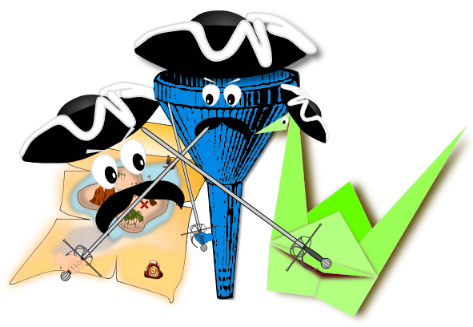

Higher-Order Fun
An introduction to functional programming
Katie Miller (@codemiller) Software Engineer at Red Hat


What is Functional Programming?

var add = function(arg1, arg2) {
return arg1 + arg2;
}
3 + " Musketeers";
// "3 Musketeers"
3 + " Little Pigs";
// "3 Little Pigs"
3 + " Amigos";
// "3 Amigos"
add(1, 2) + " Musketeers";
// "3 Musketeers"
add(1, 2) + " Little Pigs";
// "3 Little Pigs"
add(1, 2) + " Amigos";
// "3 Amigos"
var impureAdd = function(arg1, arg2) {
assessSituation();
if (warDeclared) {
console.log("Impending doom...");
launchMissile();
}
return arg1 + arg2;
}
impureAdd(1, 2) + " Musketeers";
// "3 Musketeers"
impureAdd(1, 2) + " Little Pigs";
// "Impending doom..."


Spot the Bug

First-Class Functions
Closures
function startsWith(name) {
var firstLetter = name.charAt(0);
return function() {
return "Name starts with " + firstLetter;
};
}
var myName = startsWith("Katie");
var languageName = startsWith("JavaScript");
myName();
// "Name starts with K"
languageName();
// "Name starts with J"

Modularity


FP Glue
"[T]o increase one's ability to modularize a problem conceptually, one must provide new kinds of glue in the programming language. ... [F]unctional languages provide two new, very important kinds of glue." - John Hughes
- Lazy evaluation
- Higher-order functions
Higher-Order Functions (HOFs)

- Take one or more functions as arguments, and/or
- Return a function as a result
Building Functions
- Function composition:
h(x) = f(g(x)) - Partial application:
f(1,2) //g(x,y,z) - Currying:
f(1) //g(x)
Language Support
| Language | Anonymous Functions | Closures | Higher-Order Functions | Partial Application |
|---|---|---|---|---|
| Clojure | Yes | Yes | Yes | Yes |
| JavaScript | Yes | Yes | Yes | ECMAScript 5 |
| Python | Partial; expressions only | Yes | Yes | 2.5 |
| Ruby | Yes | Yes | Different syntax; restrictions | 1.9 |
Source: Wikipedia
FP's Three Musketeers
Show Me The Code!

Map

Modus Operandi
- Applies given function to every element in a data structure
- Produces a new data structure
- Doesn't change the shape of the data structure
Imperative vs Functional
var list = ['Map', 'Filter', 'Fold'];
var first = function(str) { return str.charAt(0); }
// Imperative style
var imperative = function(list, func) {
result = [];
for(var i = 0; i < list.length; i++) {
result.push(func(list[i]));
}
return result;
}
// Functional style
var functional = function(list, func) {
return _.map(list, func);
}
imperative(list, first);
// ['M', 'F', 'F']
functional(list, first);
// ['M', 'F', 'F'] Language Support
Defining Map
Visualising Map
Filter

Modus Operandi
Imperative vs Functional
Language Support
Defining Filter
Visualising Filter
Fold/Reduce

Modus Operandi
Fold Left vs Fold Right
Recursive Pattern
Imperative vs Functional
Language Support
Defining Fold
Defining Map/Filter with Fold
Visualising Fold
Gluing It All Together

Conclusion
Links, References and Credits
Higher-Order Fun
http://hof.codemiller.com
Katie Miller (@codemiller) Software Engineer at Red Hat